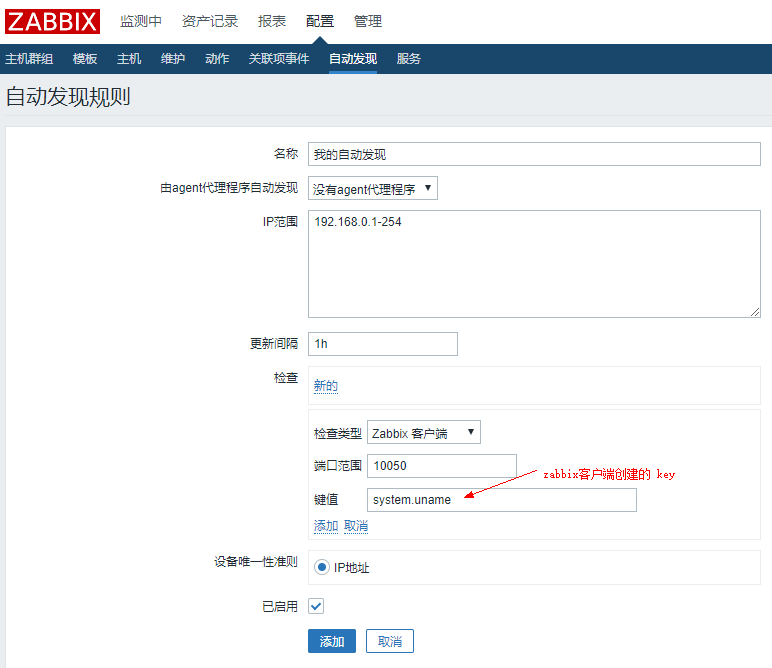
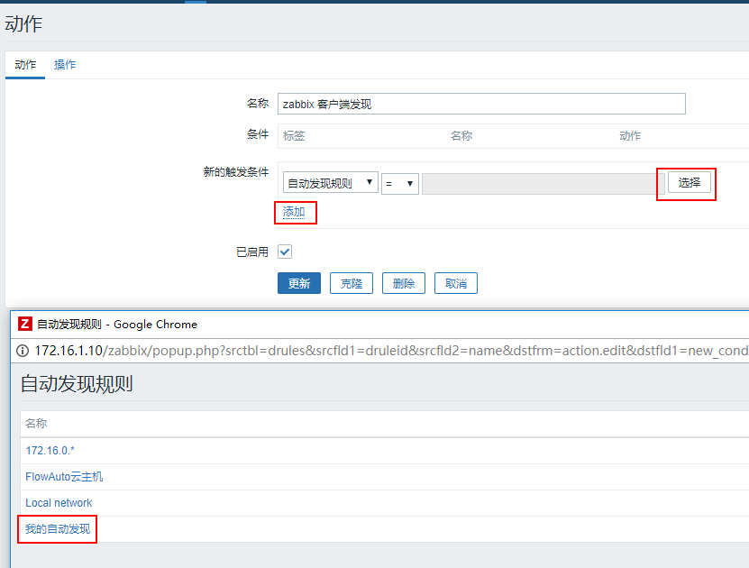
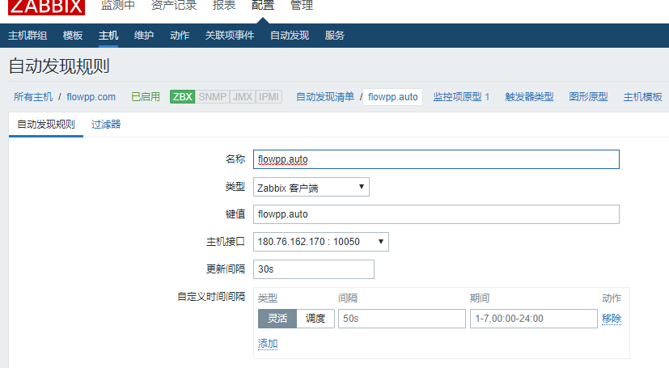
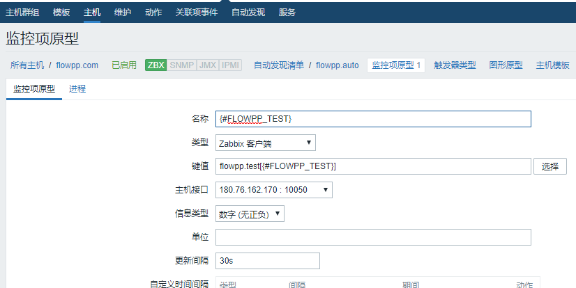
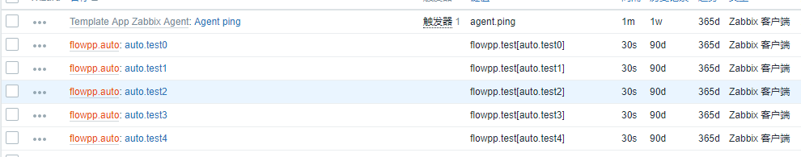

Zabbix自动发现
Zabbix自动发现不仅可以自动发现主机根据模板创建，也可以根据发现规则在指定主机内创建监控项等
2017/12/2
Zabbix自动发现
Zabbix自动发现不仅可以自动发现主机根据模板创建，也可以根据发现规则在指定主机内创建监控项等
主机自动发现
本节主机自动发现主要针对 zabbix客户端方式
参考文档: https://www.zabbix.com/documentation/3.4/zh/manual/discovery/network_discovery/rule
- 在
配置 -> 自动发现 -> 创建自动发现并启用  - 在
配置 -> 动作 -> 事件源(自动发现)查看和创建发现后续动作 
自动发现规则
自动发现规则，是指针对主机监控时，如果监控项的key 无法确定，我们需要通过客户端脚本自动发现并创建一组类似的监控项， 图形， 触发器
自动发现的客户端脚本执行可能需要比较高的用户权限，一般需要修改 zabbix 用户权限
- 首先需要在客户端创建一个测试脚本 你可以选择任意你熟悉的编程语言书写这个脚本，我们的目的只是为了得到结果JSON文件
const { writeFile } = require('fs')
const run = function run() {
let data = Array(Math.random() * 10 | 0).fill(0).map((x, i) => ({'{#FLOWPP_TEST}': `auto.test${i}`}))
writeFile('flowpp.auto.json', JSON.stringify({data}, 0, 2), () => {
console.log(data)
setTimeout(run, 60000)
})
}
run()
我们执行脚本的目的就是得到这样的结果
{
"data": [
{
"{#FLOWPP_TEST}": "auto.test0"
},
{
"{#FLOWPP_TEST}": "auto.test1"
},
{
"{#FLOWPP_TEST}": "auto.test2"
},
{
"{#FLOWPP_TEST}": "auto.test3"
},
{
"{#FLOWPP_TEST}": "auto.test4"
}
]
}
- 客户端配置
你需要在客户端 配置文件(
/etc/zabbix/zabbix_agentd.con)中加入如下配置UserParameter=flowpp.auto,/home/xxx/flowpp.auto.sh "$1" 修改客户端 zabbix用户 权限到可执行指定脚本 在
/etc/sudoers中加入zabbix ALL=(ALL) NOPASSWD: ALL服务端配置自动发现规则  
效果 